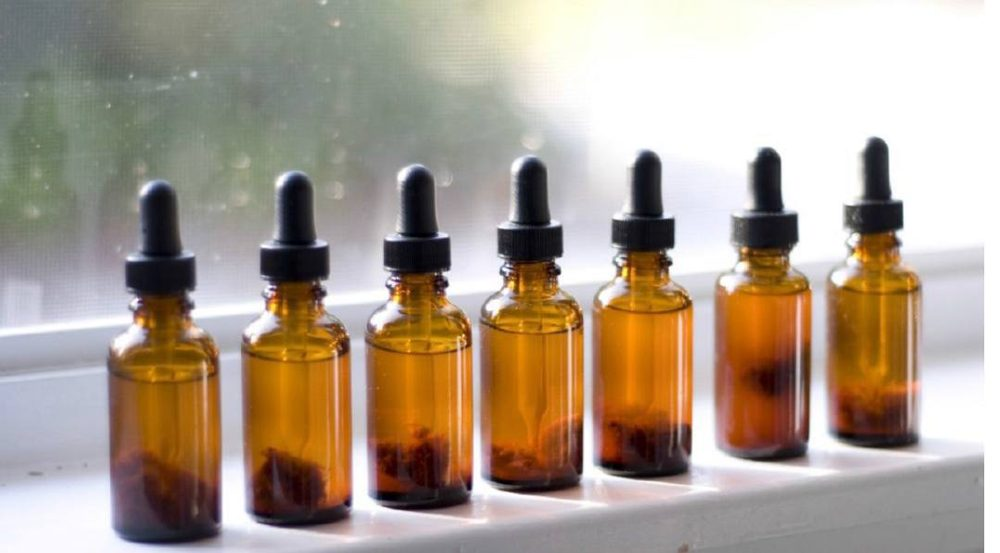

Капсуляция плаценты
Естественная поддержка восстановления после родов, сделанная из вашей плаценты и только для вас.
Ещё сомневаетесь? Напишите мне, с радостью отвечу на вопросы.
Естественная поддержка восстановления после родов, сделанная из вашей плаценты и только для вас.
Ещё сомневаетесь? Напишите мне, с радостью отвечу на вопросы.


Плаценту бережно высушивают, измельчают в порошок и помещают в капсулы. Получается натуральная добавка из вашего собственного тела. Из одной плаценты обычно выходит около 150 капсул. Многие мамы принимают их в первые 40 дней, чтобы поддержать восстановление, энергию, выработку молока и настроение.
Флакон 100 мл из вашей плаценты, срок хранения не ограничен.
Для вас: традиционно используют позже, чтобы восстановить силы, поддержать гормональный баланс, снять стресс, во время болезни, при менструальном цикле, в менопаузу и другие переходные периоды.
Для мамы и дочери: ваша биологическая мама может использовать её в менопаузу, а биологическая дочь — когда у неё начнутся месячные.


Уникальная память о родах: отпечаток плаценты, «древо жизни», на холсте. Делается перед капсуляцией. Его можно повесить дома, а холст снять с рамы и свернуть: он легко поместится в чемодан.
Вы бронируете место, и мы вместе всё планируем.
Я забираю плаценту, обычно в первый день.
Бережно высушиваю и капсулирую.
Ваши капсулы готовы.
Я готовлю плаценту в безопасной и тёплой обстановке, с глубоким уважением к чуду, которое вы пережили.
Медицинский халат, стерильные перчатки и маска, полностью стерилизованная кухня и инструменты, которые используются только для работы с плацентой. Я работаю с одной плацентой за раз: ваша остаётся вашей от начала до конца.
Без проблем! После родов держите плаценту в холодильнике. Партнёр или помощник упаковывает её в термос со льдом и отправляет мне паромом. Термос я даю на время, а капсулы отправляю обратно.
Предоплата 2 000 бат бронирует место (не возвращается), остальное — когда получите капсулы.
Я беру только 3 мам в месяц, поэтому бронируйте заранее, лучше до 36 недель.
Я Катя, мама троих детей, 5 лет живу на Ко Пангане. Сопровождаю женщин в родах и восстановлении после них, делаю послеродовой массаж и преподаю кундалини-йогу. Капсуляции плаценты научилась у Виктории Видры, опытной доулы и специалиста по плаценте. Теперь помогаю мамам получить мягкую поддержку собственной плаценты в первые недели после родов.

Лучше до 36 недель. Напишите мне, и мы вместе всё спланируем.
Средства из плаценты — традиционная практика, а не лечение. Они не заменяют консультацию врача.